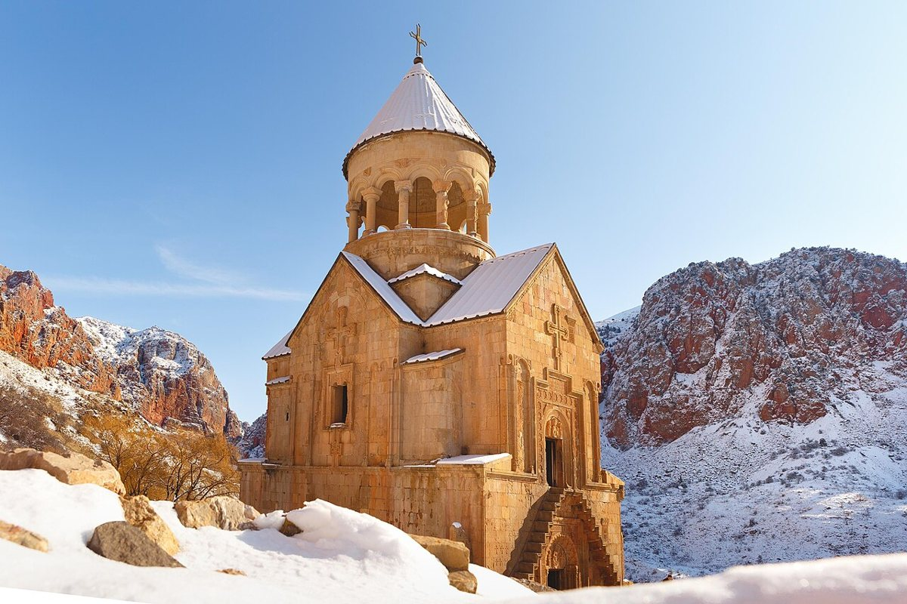
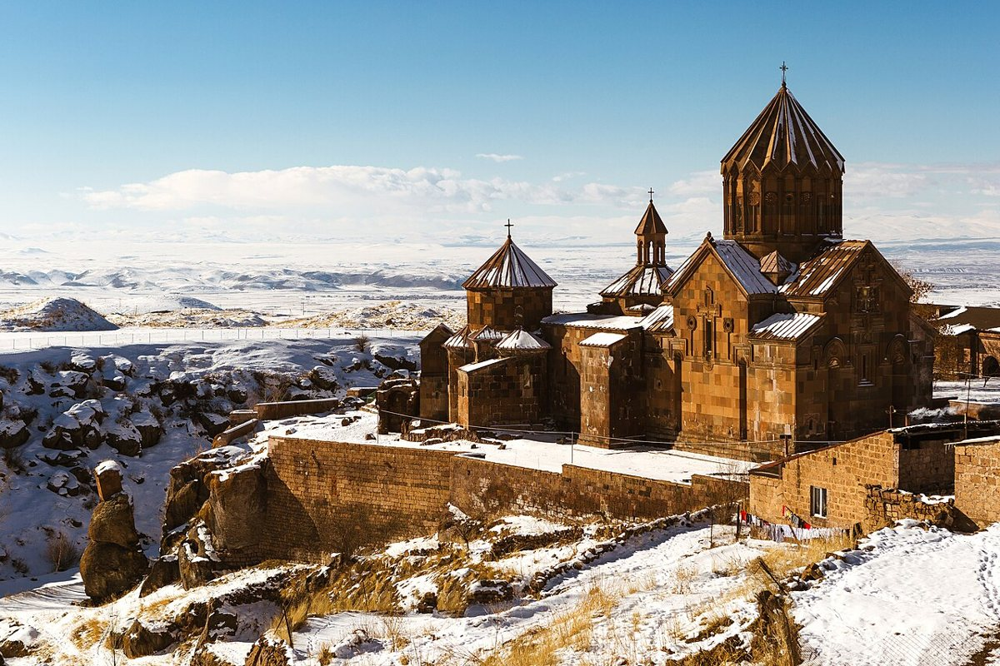
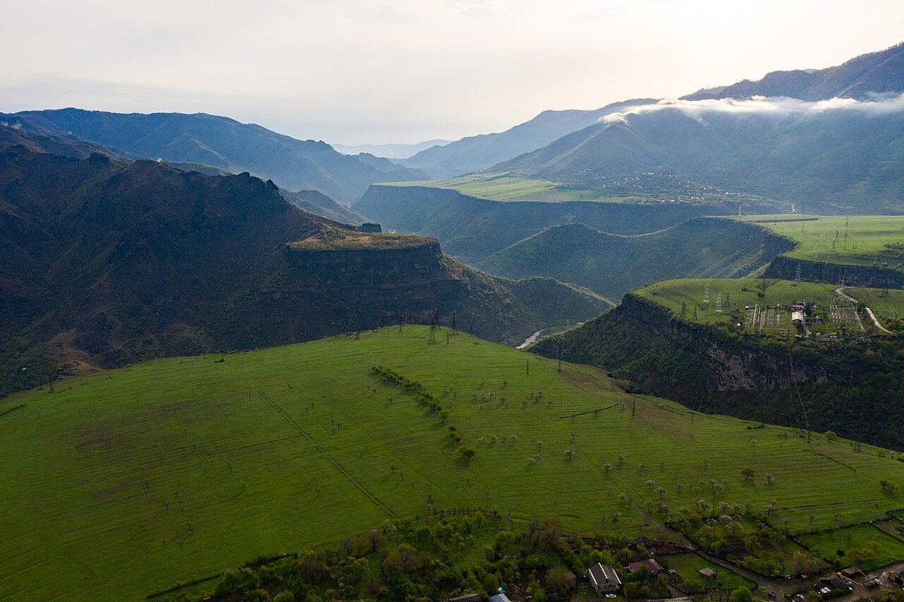
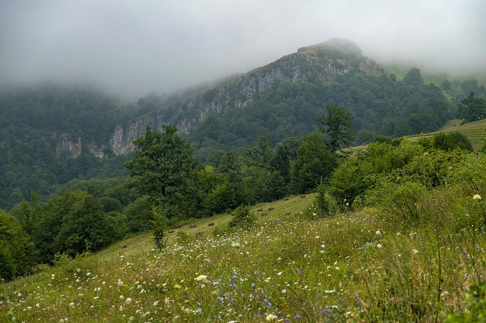
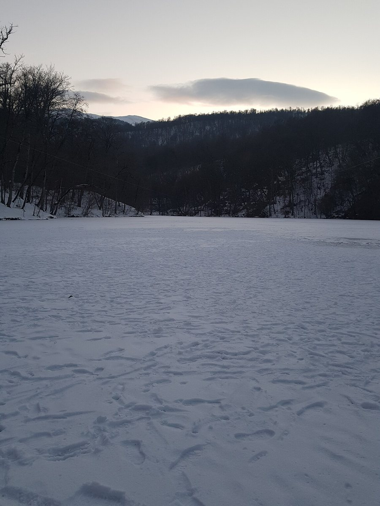

Itinerary
Garni – Geghard – Symphony of Stones
Discover Armenia's ancient pagan heritage at Garni Temple, explore the UNESCO-listed Geghard Monastery, and admire the spectacular natural basalt columns known as the Symphony of Stones.


Khor Virap – Noravank – Areni
Enjoy breathtaking views of Mount Ararat from Khor Virap Monastery, explore the stunning Noravank Monastery surrounded by red rock cliffs, and discover the wine-making traditions of Areni village.


Gyumri – Harichavank – Black Fortress
Explore Gyumri's historic Kumayri district, admire its traditional architecture and cultural heritage, visit Harichavank Monastery, and discover the historic Black Fortress.


Haghpat – Sanahin – Debed Canyon
Discover the medieval monasteries of Haghpat and Sanahin, both UNESCO World Heritage Sites, and enjoy the breathtaking landscapes of Debed Canyon.


Dilijan: Forests, Monasteries & Lake Parz
Discover the charming town of Dilijan, surrounded by lush forests and mountains. Visit the historic Haghartsin Monastery, hidden among the forested hills, and enjoy the peaceful natural beauty of Lake Parz, a picturesque lake nestled in Dilijan National Park.

